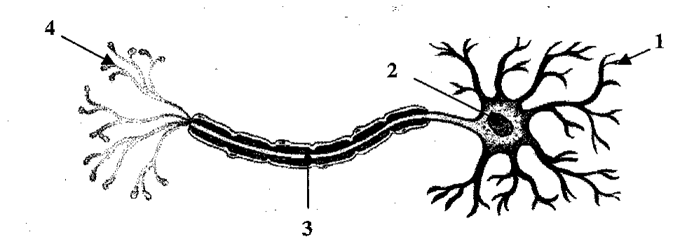
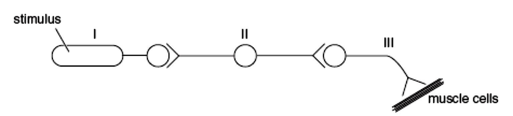
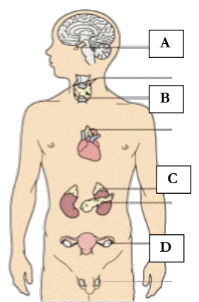
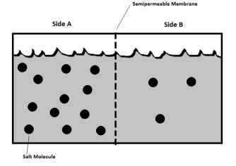
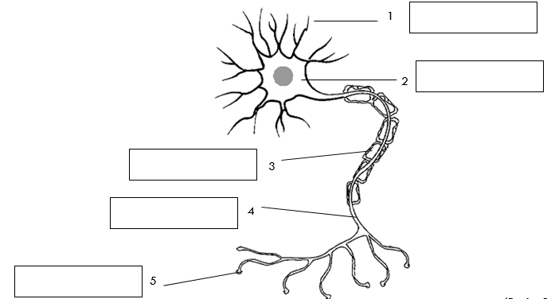
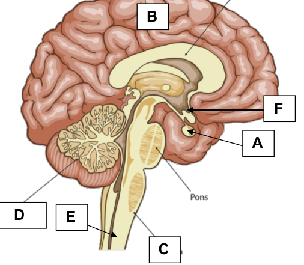
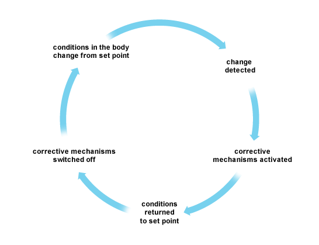

Revision questions on coordination and control: neurons, the brain, hormones, homeostasis and cells. Section B question numbers follow the original paper (there is no Question 4).
Section A: Multiple choice
A motor neuron:
Damage to the cerebellum from a collision during a basketball match could cause difficulty with:
Hormones are chemical molecules:
Which part of a neuron speeds up nerve transmission and protects the axon?
The myelin sheath is made by Schwann cells, but the sheath itself is the insulating layer.
Homeostasis is the term used to describe:
A person smells hot food as he passes a restaurant, and shortly afterwards notices that the amount of saliva in his mouth has increased. Which statement is correct?
Nerve cells that carry information away from receptors, along the axon to the central nervous system, are called:
Coordination and communication between the systems of the body is carried out by:
Endocrine glands:

Which structure is responsible for receiving information from another neuron?
Structure 1 is the dendrites.

The transmission of information from I to III is achieved by:
Impulses travel electrically along each neuron, and chemically (neurotransmitters) across the synapses between them.

Name each labelled endocrine gland.
A: B: C: D:
Which is an accurate description of diffusion?

The two chambers are separated by a semipermeable membrane that salt cannot pass through, but water can. After 10 minutes, what would you expect?
Water moves by osmosis towards the higher salt concentration (side A).
Which of these is found only in plant cells?
What is a difference between prokaryote and eukaryote cells?
Section B: Short answer
Question 1 (6 marks)

Label 1:
Label 2:
Label 3:
Label 4:
Label 5:
The nerve impulse travels from the towards the .
What is the main task of (a) a receptor and (b) the peripheral nervous system?
(a) A receptor detects a change in the stimulus and sends a nerve impulse along a sensory neuron.
(b) The peripheral nervous system carries electrical messages from the body to the CNS, and from the CNS to the body.
Question 3 (9 marks)
Which are reflex actions? Coughing: Sneezing: Reading: Cycling: Writing: Blinking:
Using touching a hot stove as your example, write out the stimulus–response model: name each stage, say what happens at each stage, and name the type of neuron the message travels along from the receptor to the CNS (A) and from the CNS to the effector (B).
- Stimulus: heat from the stove.
- Receptor: heat receptors in the skin detect the change. → message travels along A, a sensory neuron, to the CNS.
- Coordination centre (CNS): the spinal cord connects to a motor neuron (and sends a message on to the brain).
- → message travels along B, a motor neuron, to the effector: the muscles in the arm.
- Response: the arm moves away from the stove.
(½ mark for each stage named, ½ mark for each stage described, 1 mark for both neurons.)
How do reflex actions differ from conscious (voluntary) responses? Why is this important?
Reflex responses are quicker, because they bypass the brain (the spinal cord coordinates them) (1 mark). This is important in dangerous situations, as reflexes minimise harm to the body (1 mark).
Question 5 (5 marks)

Match each part with its letter.
Cerebellum: Medulla oblongata: Cerebrum:
Spinal cord: Hypothalamus: Pituitary gland:
Describe the function of parts B and C.
B (cerebrum): where higher-order thinking takes place: memory, speech and complex thought.
C (medulla oblongata): regulates involuntary responses of the cardiovascular and respiratory systems (heart rate and breathing).
Question 6
Body temperature is kept at about 37 °C by thermoregulation.
Why is this important?
If the body gets too hot, cells (enzymes) stop working and die; if it gets too cold, cells can't work fast enough to survive.
Describe one involuntary mechanism the body uses to stop its temperature falling too low.
Any one, described: blood vessels leading to the skin constrict, so less heat is lost from the skin; shivering (muscle contractions release heat); hormones are released that speed up metabolism, producing more heat.
List two other internal conditions the body must regulate.
Any two: blood glucose; water (osmoregulation); pH; blood CO2.

Describe what happens at each stage of the negative feedback loop that regulates your body temperature on a hot day: stimulus, receptors, (coordination), effectors, response.
- Stimulus: body temperature increases from 37 °C to 39 °C.
- Receptors: thermoreceptors detect the increase and send a message along a sensory neuron to the hypothalamus.
- The hypothalamus sends a message along motor neurons to effectors such as the sweat glands.
- Effectors: sweat glands produce sweat; evaporating sweat takes heat energy from the body.
- Response / corrective reset: temperature decreases back to 37 °C.
Make 3 comparisons between the nervous and endocrine systems (e.g. type of message, how it is carried, speed of transmission, speed of action, duration of response, specificity).
Any three, each with both systems:
- Type of message: nervous, electrical impulses; endocrine, chemical messenger molecules (hormones).
- How it is carried: nervous, along neurons; endocrine, in the blood.
- Speed of transmission: nervous, very fast (milliseconds), directly to the destination; endocrine, much slower, as hormones travel in the blood to target cells.
- Duration: nervous, short-lasting, as impulses must keep being produced; endocrine, longer-lasting, as hormones stay around for longer.
Question 7 (5 marks)
Define the term osmosis.
The passive movement of water molecules from a low solute concentration to a higher solute concentration, across a semi-permeable membrane.
Give the function of each organelle.
Ribosome:
Chloroplast:
Cell membrane: